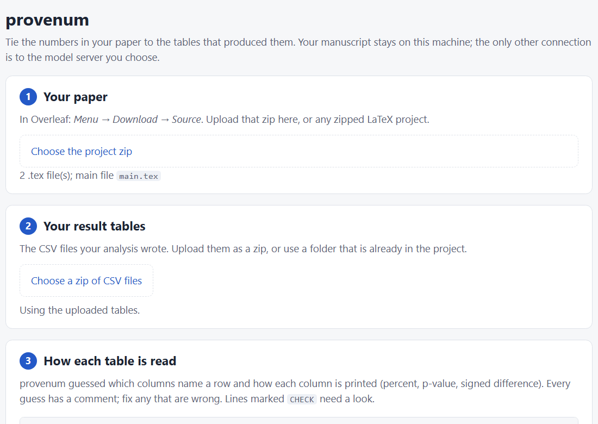
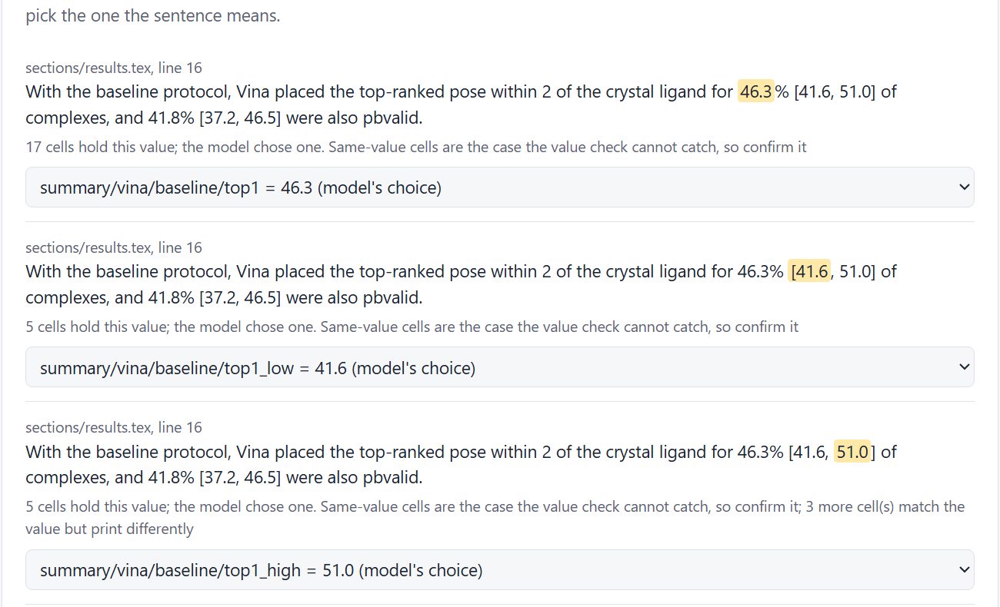

Model proposes the cell. Code checks the value reproduces “46.3”.
Real cells from the DockPrepBench tables (4 of the 17 shown)
In the app

You stay in charge

Tested on a real paper (DockPrepBench results section, qwen3:32b)
249of 307 numbers linked
228same cell as the hand-checked version
20/21others flagged for you to confirm
0of 504 lines changed in the PDF
After the next rerun
$ provenum diff paper/tables/numbers.tex --manuscript paper/sections/*.tex
provenum diff: 7 cited value(s) changed in 3 sentence(s); 3 need a look
results.tex:2 NEEDS A LOOK
Vina's top-1 success rose from 46.3% to [53.0 -> 47.9]% with the 2 Å box
([+6.8 -> +1.6] points; Holm p = [4.1e-04 -> 0.31]).
! cmp/vina/box2/delta_low: 3.5 -> -1.2: sign changed; interval now includes 0! cmp/vina/box2/p_holm: 4.1e-04 -> 0.31: now not below 0.05
provenum
Numbers you can trace.
● Runs on your machine● Local open model (Ollama)● MIT licence